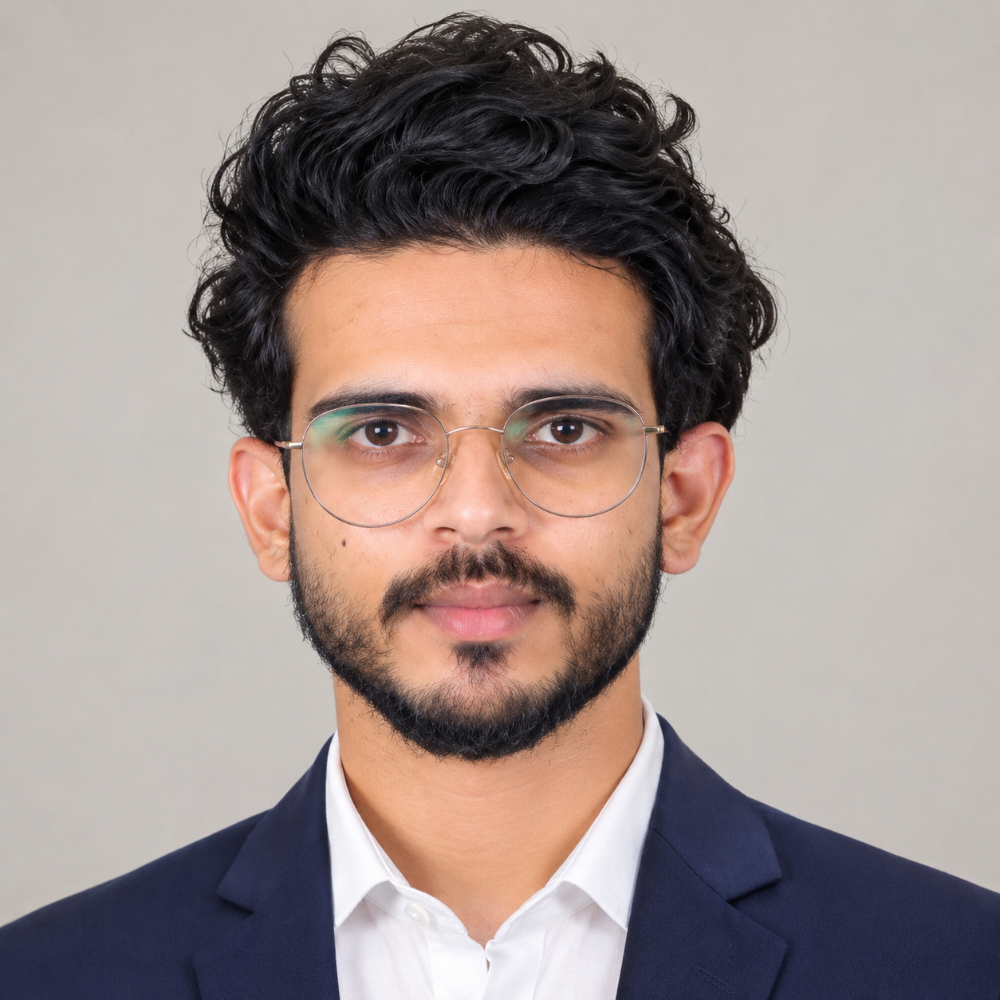
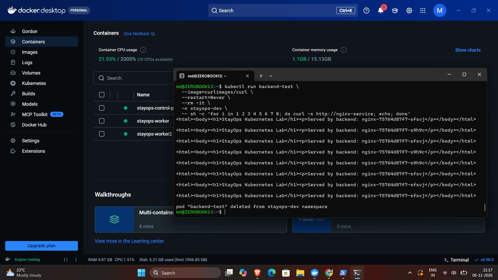
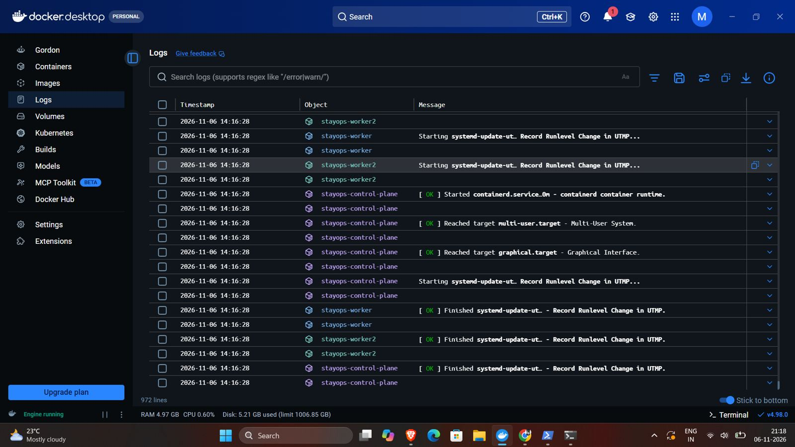
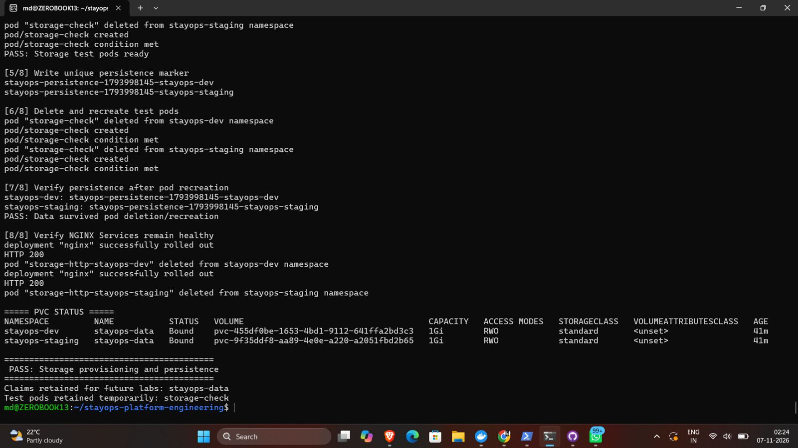
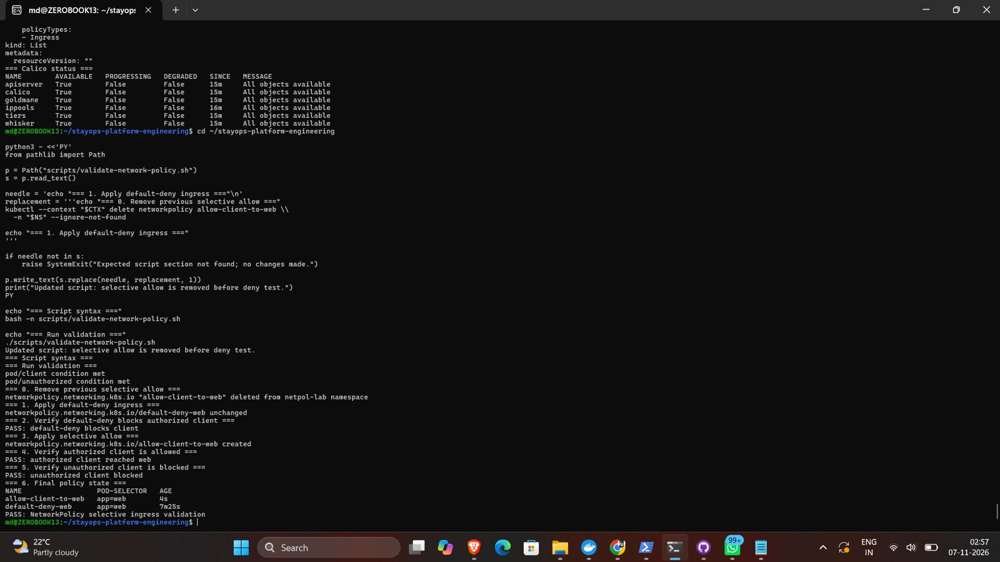
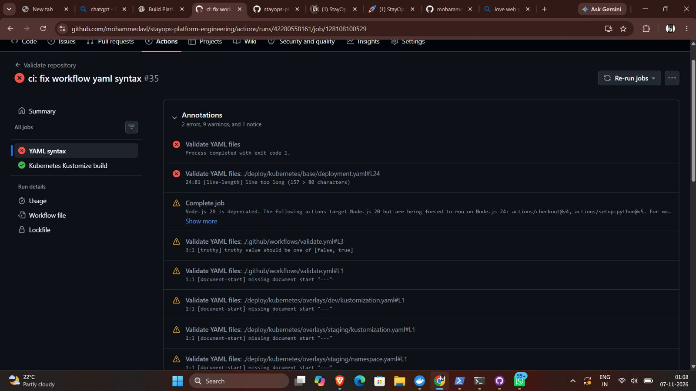
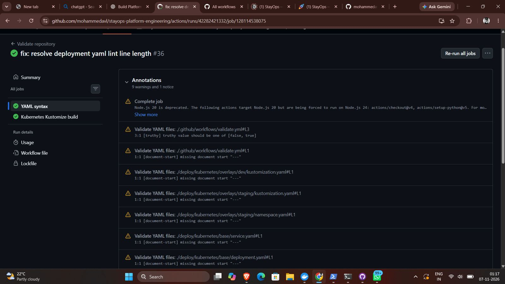

01 — PLATFORM LAB2025—26
StayOps
Platform Engineering
Repeatable Kubernetes delivery with environment overlays, health checks, persistent storage, RBAC, and isolated network policies.
Computer Science & Engineering (Cyber Security) graduate building practical experience across Linux, Kubernetes, Red Hat OpenShift, containers, networking, and enterprise infrastructure. I like making systems repeatable, understandable, and easier to operate.

A hands-on engineering lab focused on platform foundations: workload delivery, governance, storage, and network boundaries.
Repeatable Kubernetes delivery with environment overlays, health checks, persistent storage, RBAC, and isolated network policies.
GitHub Actions validates YAML and Kustomize builds across base, development, and staging configurations.
Least-privilege auditor access and Calico default-deny/selective-allow experiments in an isolated cluster.
PVC provisioning and marker persistence tests across pod recreation, documented with explicit scope.
Practiced OpenShift 4.x and Kubernetes administration with oc/kubectl across SNO environments; Pods, Deployments, Services, Namespaces, storage, ingress, DNS, and troubleshooting.
Offline image-mirroring and transfer workflows, container image archives, SHA-256 checksum validation, SeaweedFS image mirroring, and DNS/network troubleshooting.
Filesystem, permissions, systemd, SSH, networking, and storage administration; ip, ss, ping, curl, dig, nslookup, lsblk, df, du, findmnt; Proxmox virtualization.
Studied MAS deployment architecture and OpenShift platform requirements, including Maximo Manage and Maximo Aviation.
A broad, hands-on toolkit across Linux systems, container platforms, networking, automation, storage, and enterprise infrastructure.
OpenShift 4.x, SNO, Pods, Deployments, Services, Namespaces, probes, oc, kubectl, Kustomize, cluster administration and troubleshooting.
Filesystem, permissions, users/groups, systemd, processes, SSH, package basics, logs, shell operations and troubleshooting.
Container lifecycle, images, registries, image archives, builds, runtime concepts and image transfer workflows.
IP addressing, routes, ports, services, ingress, DNS resolution, connectivity checks and network troubleshooting.
Service accounts, least privilege, authorization checks, default-deny/selective-allow policies and traffic isolation.
Persistent volumes/claims, mounts, storage provisioning, lsblk, df, du, findmnt and persistence validation.
Version control, YAML, Bash scripting, workflow automation, CI validation, Kustomize builds and repeatable checks.
Offline image mirroring, image archives, SHA-256 checksum validation, transfer workflows and SeaweedFS image mirroring.
Virtual machines, local infrastructure labs, Docker Desktop/kind environments and resource troubleshooting.
Maximo Application Suite architecture, OpenShift platform requirements, Maximo Manage and Maximo Aviation concepts.
ip, ss, ping, curl, dig, nslookup, lsblk, df, du, findmnt, logs and command-line investigation.
Declarative manifests, environment overlays, health checks, configuration, workload rollout and validation.
A few snapshots from the actual environment. Passing tests and troubleshooting history are labeled honestly.






Local kind lab results only; no production uptime, disaster recovery, or cloud deployment claims.
Open to platform engineering opportunities, collaboration, and learning from teams building reliable infrastructure.
mohammeddahudd@gmail.com ↗